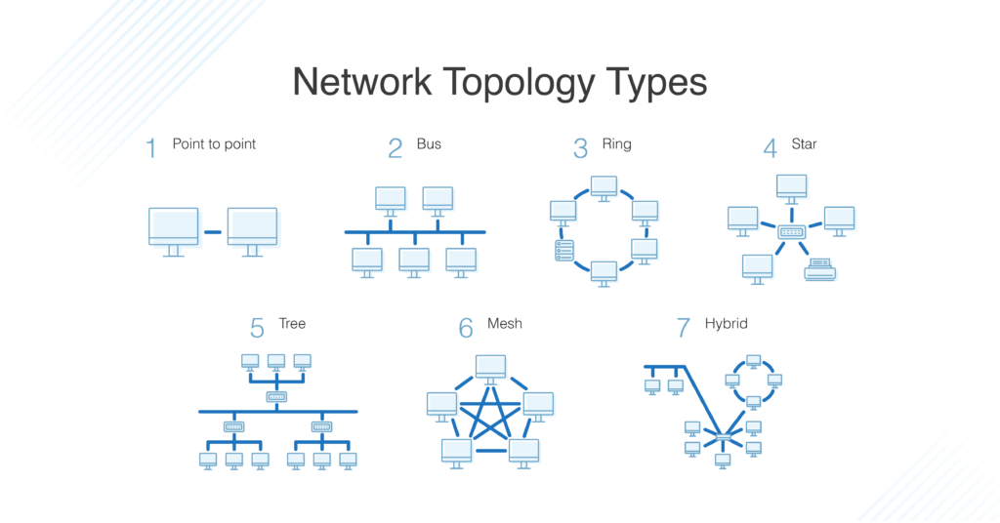
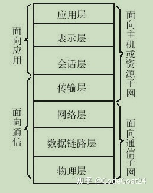
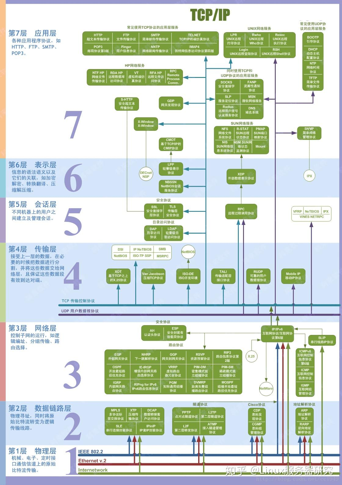

常见网络术语
节点
- 节点是连接到网络的物理电子设备，比如电脑，打印机，路由器等。如果配置正确，节点可以在网络上进行信息的收发。
- 节点可以彼此相邻，也可以有中间节点。
主机: 一种需要IP地址的节点。所有主机都是节点; 但不是所有的节点都是主机。
链路
- 链路连接网络中的节点，
- 有线的，比如以太网
- 无线的，比如wifi
- 链路要么是点对点的，要么是多点的。
协议
协议（protocol）是一组互相商定的规则，允许网络中的两个节点交换数据。
协议定义了管理通信过程中语法（可通信的内容）、语义（如何通信）以及同步（何时通信以及通信的速度）的规则。协议可以由硬件、软件或二者的组合实现。
无线和有线链路都可以有协议。
网络
- 网络（network）是一组计算机、打印机或任何其它想要共享数据的设备的通用术语。
拓扑
- 拓扑（topology）描述的是节点和链路如何在网络配置中组合在一起，通常用图描述。这里是一些常见的网络拓扑类型：

网络OSI模型
在OSI模型中，层的组织结构从最具物理形态到不太有形，虚拟但更接近最终用户。
OSI 只是一个模型，一个工具，并不是一组规则。
物理层
数据链路层
网络层
传输层
会话层
表示层
应用成

物理层
第一层中有很多技术——从物理网络设备、布线到电缆如何连接到设备之间的一切。
- 电缆，无线宽带
技术分类
- 节点（设备）和网络硬件。 设备包括集线器、中继器、路由器、计算机、打印机，等等。这些设备内的硬件包括天线、放大器、网卡（NIC，Network Interface Card），等等。
- 设备接口机制。 电缆如何连接到某个设备，以及连接到设备上的哪个地方（电缆连接器和设备插座）？连接器的大小和形状如何，它有多少个引脚？决定引脚处于活动状态还是非活动状态的东西是什么？
- 功能和程序逻辑。 连接器中每个引脚的功能是什么——发送还是接收？决定事件顺序，以便节点能够开始与第二层上的另一个节点通信的程序逻辑是什么？
- 电缆协议和规范。 以太网（CAT）、USB、数字用户线（DSL，Digital Subcriber Line）等。规范包括最大电缆长度、调制技术、无线电规范、线路编码和位同步（下文还有更多）。
- 电缆类型。 选择有屏蔽或非屏蔽双绞线、非双绞线、同轴电缆等。从这里了解更多电缆类型。
- 信号类型。 基带一次一个比特流，就像铁路一样——只支持单向。宽带同时包含多个比特流，就像双向高速公路一样。
- 信号传输方法（可能是有线的或无线的）。 选择包括电（以太网）、光（光纤网络、光纤）、无线电波（802.11 WiFi，a/b/g/n/ac/ax 变种或蓝牙）。如果是无线的话，则要考虑频率：2.5 GHz 还是 5 GHz。如果是有线或以太网的话，则还要考虑网络标准，例如 100BASE-T 和相关标准。
第一层的数据单元是比特（bit）
数据链路层
定义了数据的传输格式、可以在节点间流动的数据量大小、数据流动可以持续的时长，以及在流中检测到错误时应采取的措施。
- 线路规划。 谁应该交流多久？节点传输信息的时间应该持续多久？
- 流量控制。 应该传输的数据量是多少？
- 错误控制-检测和校正。
包含
- 介质访问控制（MAC，Media Access Control）： MAC 子层负责分配硬件标识号，这个标识号被称为 MAC 地址，它能够唯一标识网络上的各个设备。两个设备不应该有相同的 MAC 地址。MAC 地址在硬件制造时就分配好了，位于网卡当中，大多数网络都会自动对其进行识别。交换机会跟踪网络上所有的 MAC 地址。在这里和这里了解更多有关 MAC 地址的信息，在这里进一步了解网络交换机。
- 逻辑链路控制（LLC，Logical Link Control）: LLC 子层处理帧的寻址以及流量控制。速度取决于两个节点之间的链路，例如以太网或 Wifi。
数据单元是 帧（frame）。
网路层
- 在这一层，通过路由器在网络间或跨网发送信息
- 不仅仅是节点到节点的通信，我们现在还可以进行网络到网络的通信了。
路由器
- 路由器不仅通过连接到网络服务提供商（ISPs，Internet Service Providers）提供因特网访问，还跟踪着所在网络中的一切（记住交换机跟踪的是一个网络中所> 有的 MAC 地址），它所连接的其它网络，以及在这些网络中路由数据包的不同路径。
- 路由器将所有的地址和路由信息都保存在路由表中。
- 网络层的数据单元是数据包。
- 每个数据包都包含一个帧加上一个IP信息的包装
- 每个数据包都包含一个帧 加上 一个 IP 地址信息的包装。换句话说，帧被第三层的地址信息封装了。
- 每个数据包都包含一个帧加上一个IP信息的包装
传输层
- 传输层通过将消息分割成多个数据包提供端到端的消息传输，支持面向连接的和无连接的通信。
- 传输层建立在第二层的功能之上——线路规划、流量控制和错误控制。
- TCP 和 UDP 都将数据发往网络设备上的特定端口，这些网络设备都有自己的 IP 地址。IP 地址和端口号的组合被称为套接字（socket）
- 传输层的数据单元有好几个不同的名字，对于 TCP 而言，数据单元是数据包。对于 UDP 而言，包被称为数据报（datagram）。为了简化，我将只使用数据包这个术语。
- 传输层中最有名的两个协议是传输控制协议（TCP，Transmission Control Protocol）和用户数据报协议（UDP，User Datagram Protocol）。
会话层
- 会话层负责初始化、维持并终止两个用户应用程序之间的连接。它响应来自表示层的请求，并向传输层发起请求。
表示层
- 负责数据的格式，比如字符编码与转换，以及数据加密。
应用层
- 负责支持用户程序使用的服务。应用程序包括安装在操作系统中的软件程序，比如因特网浏览器（例如 Firefox）或文字处理程序（例如 Microsoft Word）。
- 应用层拥有用户应用程序运行所需的服务和功能，不包括应用程序本身。
对应的协议

转载请注明来源，欢迎对文章中的引用来源进行考证，欢迎指出任何有错误或不够清晰的表达。可以在下面评论区评论，也可以邮件至 1065016533@qq.com